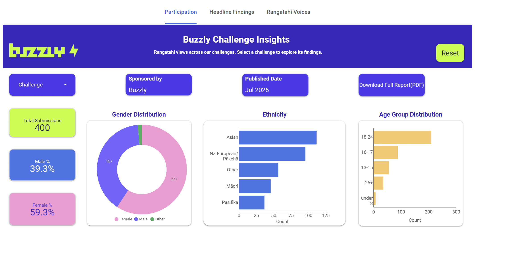

I turn messy data into clear, usable insights. My strength is building interactive dashboards in Looker Studio and Power BI that make complex data easy to understand.
I started my career in embedded testing, which gave me a careful, detail-focused way of working, and I moved into data analytics through the Mission Ready Level 6 programme. I enjoy the practical side of data: making numbers accurate and traceable, and designing dashboards people actually use. I'm currently open to Data Analyst / BI Analyst opportunities.
The tools and methods I work with.
Power BI, Looker Studio
SQL, Advanced Excel, Power Query, Google Sheets
Python (pandas, NumPy, Matplotlib), Exploratory Data Analysis (EDA)
Regression, classification, clustering, time-series forecasting (Microsoft Fabric)
Clear communication, attention to detail, problem-solving, reliability, collaboration
Selected work from my internship and Level 6 programme.

Shared with permission from Buzzly.
Open to Data Analyst / BI Analyst opportunities.